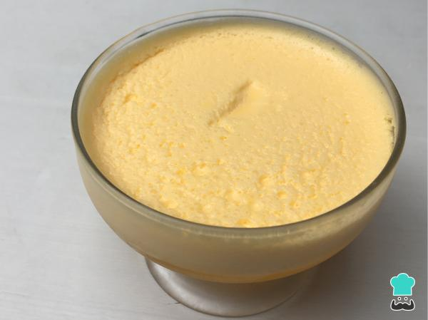

Doce de maracujá

Description
This is my best creation. As it's own name says, it is a
sweet made of maracujá. It is not recommended to anyone
that have some type of lactose intolerance, since there
goes a lot of milk derivatives.
Ingredients
- Maracuja pulp
- Condensed milk
- Milk cream
Steps
- Put the maracuja pulp in the fridge
- Put the milk cream in the fridge
- Cut open the maracuja pulp
- Cut open the condensed milk
- Cut open the milk cream
- Throw everything in the blender
- Wait
- Throw everything everything in some recipient that you like
- Eat it
Back to main page